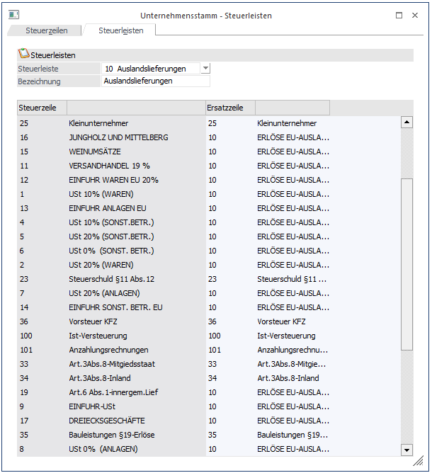

Die Steuerleisten dienen der Ersetzung von Steuerzeilen. Steuerleisten können nur bei Personenkonten hinterlegt werden. Die Steuerleisten bewirken, dass eine Steuerzeile, die bei einem Sachkonto hinterlegt wurde, durch den Eintrag der Steuerleiste überschrieben wird.
Hinweis
Weitere Informationen zur Anlage von Steuerzeilen und Steuerleisten finden Sie hier.
Eingabefelder
Ø Steuerleiste
Aus der Auswahllistbox kann eine bestehende Steuerleiste ausgesucht und bearbeitet werden. Wird der Eintrag 00 - Neueingabe ausgewählt, kann eine neue Steuerleiste angelegt werden.
Ø Bezeichnung
Hier kann die Bezeichnung der Steuerleiste eingetragen werden.
In der Tabelle werden alle Hauptsteuerzeilen (siehe Unternehmensstamm - Steuerzeile) angezeigt. Pro Hauptsteuerzeile kann eine Ersatzsteuerzeile eingegeben werden. Dadurch wird, wenn die Steuerleiste angesprochen wird, die Hauptsteuerzeile durch die eingetragene Ersatzzeile (kann entweder eine Haupt- oder eine Ersatzsteuerzeile sein) überschrieben.

Beispiel
Es gibt 3 Erlöskonten, wobei eines mit 10 % (7 %), eines mit 20 % (19 %) und eines mit 0 % Steuer angelegt wurde. Beim Kunden wird eine Steuerleiste (z.B. EU 0 % - siehe Abbildung) hinterlegt, bei der alle Steuerzeilen mit der Steuerzeile 10 (EU-Erlöse 0 %) ersetzt werden sollen.
Wird nun dieser Kunde bebucht und es wird ein Erlöskonto als Gegenkonto verwendet, ist es egal, welcher Steuersatz beim Erlöskonto hinterlegt ist. Die Steuerleiste überlagert in diesem Fall die Steuerzeile des Erlöskontos und die Steuer wird auf die Steuerzeile 10 (EU-Erlöse 0 %) gebucht.